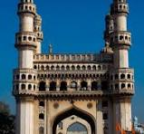

The 7 Honors
The Taj Mahal

The Taj Mahal, located in Agra, is a stunning symbol of love built by Emperor Shah Jahan in memory of his wife Mumtaz Mahal. Its intricate marble architecture and serene gardens make it one of the most beautiful monuments in the world.
Qutub Minar
The Qutub Minar in Delhi is a towering example of Indo-Islamic architecture. Built in the 12th century, it is one of the tallest brick minarets in the world and a UNESCO World Heritage Site.
Golden Temple
The Golden Temple, or Harmandir Sahib, in Amritsar, Punjab, is a spiritual and cultural center for Sikhs. Its gold-plated structure and serene surroundings make it a place of beauty and devotion.
Gateway of India

Located in Mumbai, the Gateway of India is an iconic arch monument that commemorates the landing of King George V and Queen Mary in 1911. It is a symbol of India’s rich colonial history.
Charminar
The Charminar, located in Hyderabad, is a historic mosque and landmark built in 1591. Its four grand arches and minarets make it a striking example of Islamic architecture.
Red Fort
The Red Fort in Delhi is a magnificent fortress made of red sandstone. Constructed by Mughal Emperor Shah Jahan, it served as the main residence of the Mughal emperors for nearly 200 years.
India Gate
India Gate in New Delhi is a war memorial honoring the soldiers who died during World War I. Its grand archway and surrounding gardens make it a prominent national symbol.